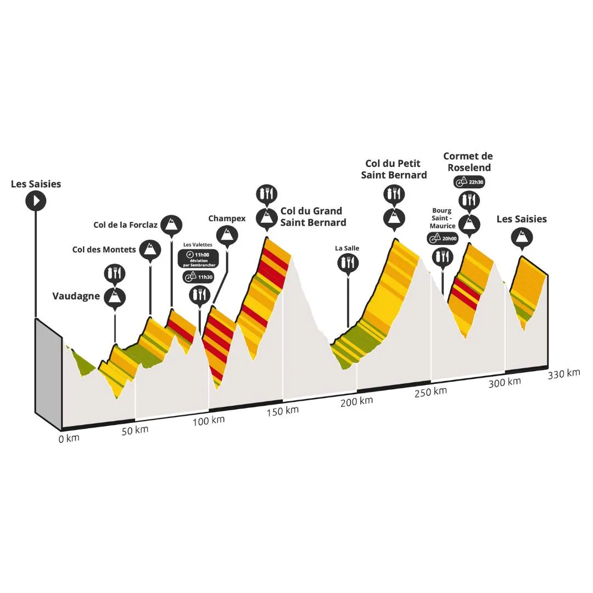
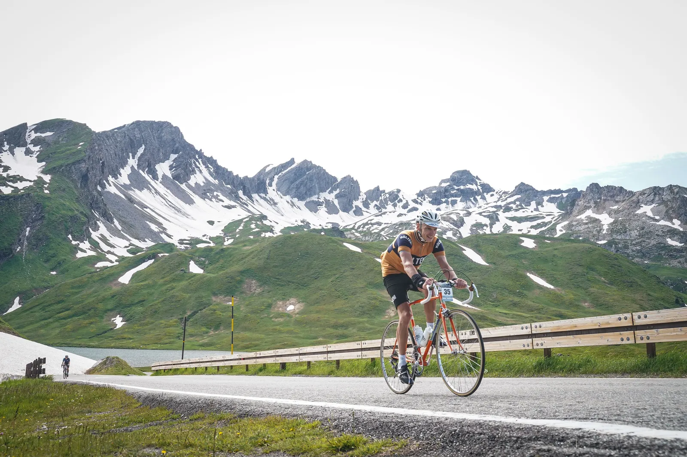
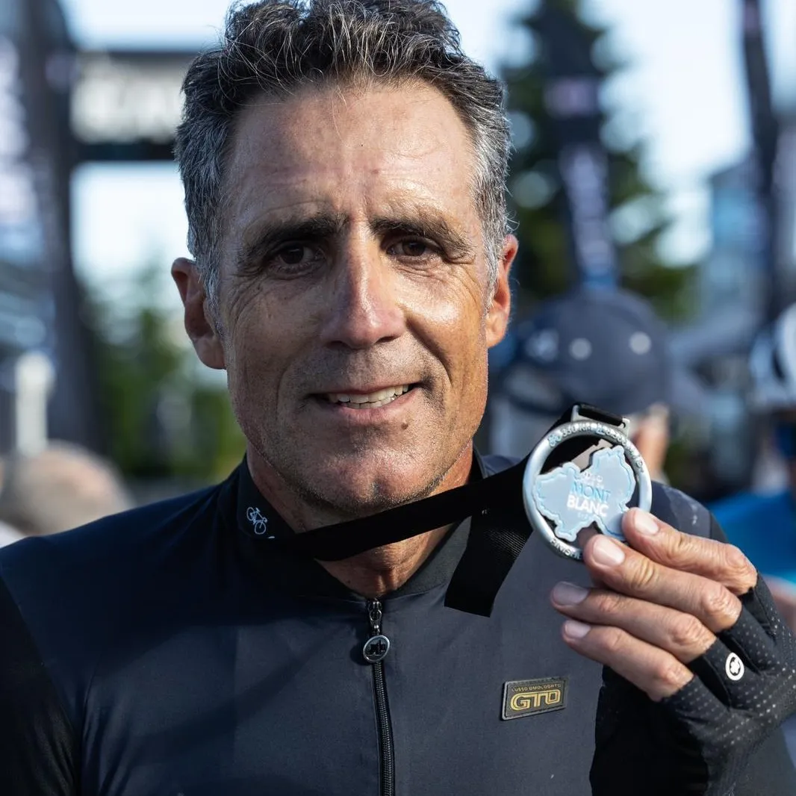
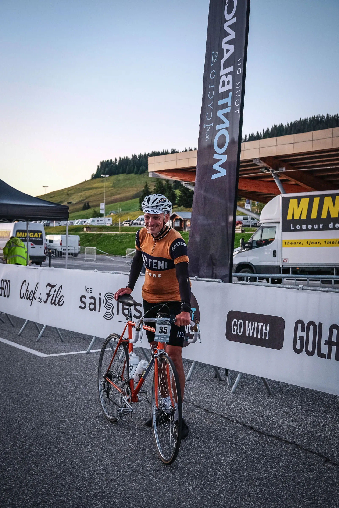

Molteni chokerer verdens hårdeste bjergryttere i Le Tour du Mont-Blanc Cyclo.

Lørdag 15/7 afholdtes den 12. udgave af Le Tour du Mont-Blanc Cyclo. Arrangøren er samme organisation, som også afholder La Marmotte løbene. Sværhedsgraden har dog fået et hak op: 330 km og 8000 højdemeter. Squadra Molteni stillede til start med en af holdets stærke grimpeurs, Kristian Blume.
Og så lige en disclaimer: Lad være med at gøre dette, medmindre du er rytter hos Squadra Molteni og hedder Blume. Ellers er du selv ude om det…

Allerede i startboksen, lidt i kl. 05, var der vantro at spore blandt de toptunede carbonister. ”Velo Eddy Merckx”, “laine”, og ”impossible” blev hvisket gennem geledderne og ret skal være ret – selv Moltenis udsendte havde sin tvivl om projektets gangbarhed. For 7 år siden gennemførte Blume løbet på en moderne alu-ramme med compact gearing og en 30’er bagpå. Og der blev kørt mange kilometer opad i 34/30. Rigtig mange. Og alligevel var det svinsk hårdt.
Men tanken om en dag at vende tilbage og køre løbet på en stålcykel, kunne ikke slås ihjel. Det ville være et sejt retro statement – og dumt. Men mest sejt.
Det tog 7 år at komme tilbage. Nu på en ramme af stål med 41/28 som letteste gearing. Med tåclips. Og i uldtrøje.
Ruten kører fra Les Saisies i Frankrig med uret rundt om Mont Blanc massivet og slutter samme sted. Undervejs passeres både Schweiz og Italien. 12 stigninger, heraf 5 i højeste kategori. Løbet er godt organiseret, der er gode depoter, og god stemning. Men med relativt få deltagere spredt godt ud på ruten, køres det meste af løbet solo eller periodisk med 1-2 andre ryttere at dele føringer med. Men det går alligevel mest op eller ned, så der er god tid til at kæmpe med sig selv, i eget tempo.
Paradoksalt nok, var løbets virkelig lange stigninger, de letteste at overkomme med den tunge gearing. Grand St. Bernard og Petit St. Bernard er ulideligt lange, men holder sig på overkommelige stigningsprocenter uden stejle ramper. Champex-lac, Comet de Roselend, og Col des Saisies har derimod flere stykker over 10 %, der fik både krank og knæ til at knirke.

For alle, var det dog en udmarvende dag. Økonomisering med kræfterne, blikket rettet fremad. Træde, træde, træde. Men naturligvis ekstra hårdt for modernisterne, der måtte udstå synet af en rytter fra fortiden glide forbi dem.
”I can’t believe you’re doing this. It’s hard enough already” stønnede en englænder ude omkring halvvejs.
”I love your bike, the shirt, the shoes. Perfetto! – but how?” kom det fra en måbende italiener.
“Amazing – this counts double”, fastslog 3 unge spanske fyre på op af sidste stigning.
Sluttid 16 timer 25 minutter. Kun 30 minutter langsommere end på den moderne cykel for 7 år siden. Steel is real!
Løbet kårer ikke en samlet vinder, da alle gennemførende betragtes som vindere. Der var dog to klare publikumsfavoritter: “Big Mig” aka Miguel Indurain, som kom ind blandt de første, og så Eddy Merckx.
I alt 428 ryttere stillede til start, 64 udgik/faldt for tidsgrænsen, 364 fuldførte.
4 øvrige danskere deltog og fuldførte.
FORZA MOLTENI

